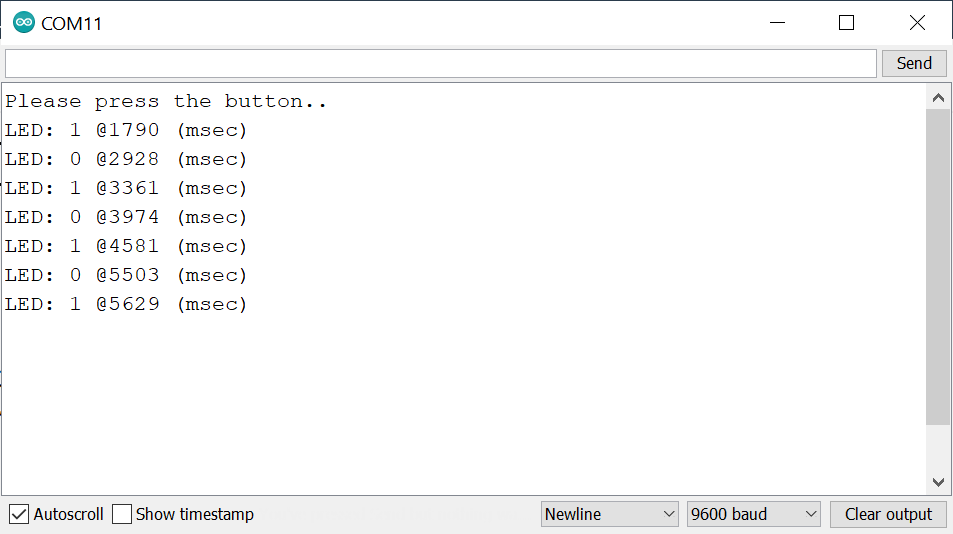
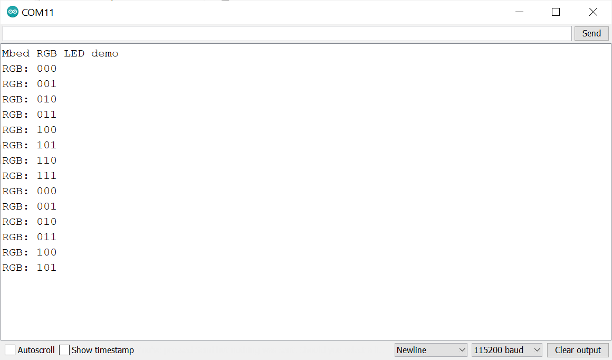
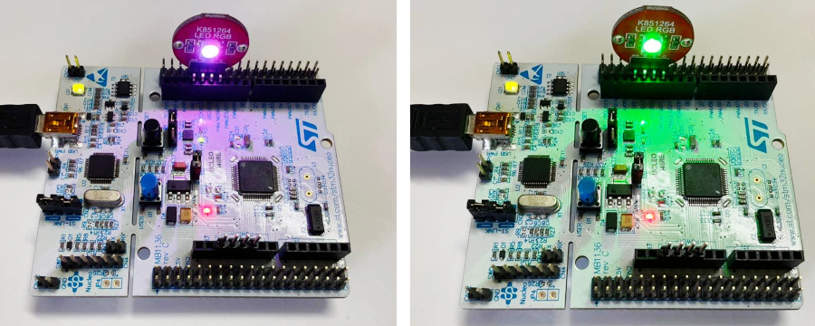

ARM Mbed OS for STM32: Code Examples (Part 1)#
เนื้อหาในส่วนนี้สาธิตการเขียนโค้ดโดยใช้ Mbed OS สำหรับบอร์ดไมโครคอนโทรลเลอร์ เช่น บอร์ด STM32-NUCLEO เป็นต้น โดยนำเสนอเป็น ตอนที่ 1 ต่อจากเนื้อหาแนะนำเกี่ยวกับ Mbed OS
คำแนะนำ: การสร้างโปรเจกต์และคอมไพล์โค้ดตัวอย่าง สามารถทำได้หลายวิธี ถ้าจะลองใช้ Mbed CLI 2 ซึ่งเป็นวิธีทำคำสั่งแบบ Command Line ก็สามารถศึกษาได้จากบทความ: แนะนำการใช้งาน ARM Mbed CLI 2
Keywords: Mbed OS, STM32 Nucleo, Mbed-enabled Platforms, RTOS Programming
▷ เริ่มต้นด้วย LED Blink#
ตัวอย่างแรกเป็นการเขียนโค้ดเพื่อทำให้ Onboard LED ที่อยู่บนบอร์ด STM32 NUCLEO
กระพริบได้ โดยทำให้ขาเอาต์พุต LED1 เปลี่ยนสถานะลอจิก ทุก ๆ 100 มิลลิวินาที
คลาส DigitalOut ของ Mbed API จะถูกนำมาสร้างเป็นอ็อบเจกต์ เพื่อใช้สำหรับขาดิจิทัลทิศทางเอาต์พุต
ในกรณีนี้ได้กำหนดให้เป็นขา LED1 และมีเมธอดสำหรับการอ่านหรือเขียนค่าลอจิกได้
#include "mbed.h"
DigitalOut led( LED1 ); // use on-board LED (LED1)
int main() { // the Main thread
while (1) {
led.write( !led.read() ); // toggle the LED output
ThisThread::sleep_for( 100ms ); // sleep for 100 msec
}
return 0;
}
เนื่องจาก Mbed OS ทำงานโดยใช้ RTOS จึงมีการทำงานแบบ Multi-Threading
มีการใช้งานเธรด (Thread) สำหรับการทำคำสั่งต่าง ๆ ในฟังก์ชัน main() และเรียกเธรดนี้ว่า
เธรดหลัก (Main Thread)
ยกตัวอย่างเช่น ถ้าต้องการหยุดรอชั่วคราวก่อนทำคำสั่งถัดไป เช่น รอ 100 มิลลิวินาที
ให้ใช้คำสั่ง ThisThread::sleep_for() เพื่อหยุดการทำงานของเธรดหลักชั่วคราว
ThisThread::sleep_for( 100ms ); // wait for 100 msec
เมื่อทำคำสั่งของโค้ดในส่วนนี้ เธรดหลักจะเปลี่ยนจากสถานะ RUNNING เป็น WAITING
แล้วรอจนกว่าเวลาจะผ่านไปตามระยะเวลาที่ต้องการ และในช่วงดังกล่าว RTOS
ก็จะทำให้ไมโครคอนโทรลเลอร์เข้าสู่ Sleep Mode ได้ เพื่อประหยัดพลังงาน
แต่ถ้าใช้คำสั่ง เช่น wait_us() ก็ใช้หน่วงเวลาได้เช่นกัน แต่เธรดจะทำงานตลอดเวลาในสถานะ RUNNING
wait_us( 100000UL ); // wait for 100 msec
ข้อสังเกต: จากรูปแบบการเขียนคำสั่งสำหรับอ่านและเขียนค่าให้อ็อบเจกต์ led เพื่อใช้งานขา
GPIO เป็นเอาต์พุต และได้ถูกสร้างมาจากคลาส DigitalOut จากเดิมที่เขียนแบบนี้
led.write( !led.read() ); // toggle LED
ก็สามารถเขียนในอีกรูปแบบที่แตกต่างไปได้ดังนี้ ซึ่งให้ผลการทำงานเหมือนกัน
led = !led; // toggle LED (read-modify-write)
▷ การอ่านค่าอินพุตจากวงจรปุ่มกดและกำหนดสถานะของ LED#
โค้ดตัวอย่างนี้ สาธิตการอ่านค่าอินพุตดิจิทัลของวงจรปุ่มกดที่ขา BUTTON1 (Active-Low)
ของบอร์ด STM32 NUCLEO โดยใช้วิธีสร้างอ็อบเจกต์จากคลาส DigitalIn
แล้วนำค่าอินพุตที่อ่านได้มากำหนดสถานะของเอาต์พุตดิจิทัลที่ขา LED1
การตรวจสอบสถานะลอจิกของอินพุตนี้ จะทำซ้ำไปเรื่อย ๆ โดยเว้นระยะเวลา เช่น 10 มิลลิวินาที เป็นต้น ดังนั้น ถ้ากดปุ่มค้างไว้ จะได้สถานะอินพุตเป็น 0 (ถ้าไม่กด จะได้ 1) และทำให้ LED บนบอร์ดสว่าง (สถานะเอาต์พุตเป็น 1) และเมื่อปล่อย LED ก็จะดับลง (สถานะเอาต์พุตเป็น 0)
ข้อสังเกต: ถ้าเลือกใช้บอร์ด เช่น NUCLEO_L476RG ขา LED1 และ BUTTON1
หมายถึง PinName หรือ ขาหมายเลข PA_5 และ PC_13 ตามลำดับ
#include "mbed.h"
DigitalOut led( LED1 ); // use on-board LED
DigitalIn button( BUTTON1 ); // use on-board push button
int main() {
while (1) {
led = !button;
ThisThread::sleep_for( 10ms );
}
return 0;
}
▷ อินเทอร์รัพท์ภายนอกและการใช้งานคลาส InterruptIn#
โค้ดตัวอย่างนี้สาธิตการตรวจสอบสถานะอินพุตจากวงจรปุ่มกดที่ขา BUTTON1 (Active-Low)
ซึ่งมีอยู่บนบอร์ดทดลอง และเมื่อเกิดการเปลี่ยนสถานะลอจิกจาก High เป็น Low ในแต่ละครั้ง
จะทำให้สถานะของ LED ที่อยู่บนบอร์ดเปลี่ยนสถานะลอจิกหนึ่งครั้ง
การตรวจสอบเหตุการณ์ที่ขาอินพุตจากปุ่มกด เช่น ขอบขาลง (Falling Edge)
จะใช้หลักการของอินเทอร์รัพท์จากภายนอก (External Interrupt)
และสร้างอ็อบเจกต์ button จากคลาส InterruptIn
เพื่อใช้กับวงจรปุ่มกดบนบอร์ดทดลอง
นอกจากนั้นยังต้องสร้างฟังก์ชันเพื่อทำหน้าที่เป็น Interrupt Callback
หรือ (Interrupt Service Routine)
สำหรับเหตุการณ์ดังกล่าว และในตัวอย่างนี้ได้สร้างฟังก์ชันชื่อ button_callback()
และจะต้องเปิดใช้งานอินเทอร์รัพท์สำหรับอ็อบเจกต์ button โดยทำคำสั่ง
button.fall( &button_callback )
#include "mbed.h"
InterruptIn button( BUTTON1 ); // use on-board push button
DigitalOut led( LED1 ); // use on-board LED
volatile int flag = 0; // global variable
void button_callback() {
button.fall( NULL ); // disable interrupt on button pin
flag = 1; // set flag
}
int main() {
printf( "Please press the button..\r\n" );
fflush( stdout );
// enable interrupt on button pin
button.fall( &button_callback );
while (1) {
if (flag) { // check flag
// toggle the LED
led = !led; // toggle the LED
flag = 0; // clear flag
// print the LED status
printf( "LED: %d @%lu (msec)\n",
(int)led.read(), us_ticker_read()/1000 );
// sleep for 100 msec
ThisThread::sleep_for( 100ms );
// re-enable interrupt on button pin
button.fall( &button_callback );
}
}
}
เมื่อเกิดเหตุการณ์ในแต่ละครั้ง (เกิดขอบขาลงของสัญญาณอินพุตเมื่อมีการกดปุ่ม)
จะมีการเปลี่ยนค่าของตัวแปรภายนอก flag จาก 0 ให้เป็น 1
แล้วปิดการตรวจสอบอินเทอร์รัพท์สำหรับขาอินพุตสำหรับปุ่มกด โดยทำคำสั่ง
button.fall( NULL )
ในฟังก์ชัน main() การทำงานของประโยคคำสั่ง while(1) {...}
จะคอยตรวจสอบค่าของตัวแปร flag ถ้ามีค่าเป็น 1 ก็จะสลับสถานะลอจิกสำหรับ LED1
หนึ่งครั้ง แล้วเคลียร์ค่าของ flag เป็น 0 จากนั้นก็เปิดใช้งานอินเทอร์รัพท์ที่ขาอินพุตสำหรับปุ่มกดใหม่อีกครั้ง
และหยุดการทำงานไว้ประมาณ 100 มิลลิวินาที แล้วจึงทำต่อไป

รูปภาพ: ตัวอย่างข้อความเอาต์พุตจากคำสั่ง printf() ในหน้าต่างของ Arduino Serial Monitor
เมื่อมีการกดปุ่มหลาย ๆ ครั้ง
ข้อสังเกต: รูปแบบการเขียนโค้ดเพื่อปิดและเปิดการตรวจสอบอินเทอร์รัพท์สำหรับขาอินพุตในตัวอย่างนี้ ก็เพื่อช่วยลดปัญหาที่เกิดจากการกระเด้งของปุ่มกด (Push Button Bouncing) หรือ การกดปุ่มหนึ่งครั้งแต่ทำให้เกิดเหตุการณ์ขอบขาลงหลายครั้งในช่วงเวลาสั้น ๆ หรือจะใช้คำสั่งต่อไปนี้ เพื่อปิดหรือเปิดอินเทอร์รัพท์ที่ขาปุ่มกดก็ได้เช่นกัน
// disable the interrupt on button pin
button.disable_irq();
// enable the interrupt on button pin
button.enable_irq();
▷ การอ่านค่าเวลาของระบบโดยใช้คลาส Timer#
ตัวอย่างนี้สาธิตการเขียนโค้ด เพื่อวัดช่วงเวลาระหว่างสองเหตุการณ์ โดยใช้ตัวนับ หรือ คลาส Timer
ที่มีอัตราการนับคงที่
ตัวแปรภายนอกเป็นอ็อบเจกต์ timer ที่ถูกสร้างจากคลาส Timer แล้วมีการเรียกใช้เมธอด เช่น
- คำสั่ง
timer.start()เป็นการเริ่มต้นทำงาน (เริ่มนับ) และถ้าต้องการให้หยุดชั่วคราว ก็ใช้คำสั่งtimer.stop() - คำสั่ง
timer.reset()เป็นการรีเซตค่าของตัวนับให้เป็น 0 - คำสั่ง
timer.elapsed_time()เป็นการอ่านค่าของtimerในขณะนั้น
ถ้าต้องการแปลงค่าที่อ่านได้จาก timer ให้เป็นตัวเลขในหน่วยเวลาเป็นมิลลิวินาที ก็ให้ใช้คำสั่ง
duration_cast<milliseconds>(...) ของ C++ namespace ที่มีชื่อว่า std::chrono
ในตัวอย่างโค้ดนี้ จะเห็นว่า มีการใช้อ็อบเจกต์จากคลาส Timer ในการจับเวลาหรือวัดความกว้างของช่วงเวลา
(Time Duration Measurement)
เช่น การหน่วงเวลาที่เกิดจากการทำคำสั่ง wait_us(...) และ ThisThread::sleep_for(...)
#include "mbed.h"
using namespace std::chrono; // for duration_cast<milliseconds>()
Timer timer; // create a Timer instance
int main() {
uint32_t ts;
timer.start(); // start the timer
printf( "Timer started.\n" );
while (1) {
timer.reset(); // reset the timer
wait_us( 100000 ); // wait for 100ms before proceeding
// read the elapsed time of the timer (in msec)
ts = duration_cast<milliseconds>(timer.elapsed_time()).count();
printf( "Duration 1): %lu msec\n", ts );
timer.reset(); // reset the timer
// sleep for 100 msec (0.1 seconds)
ThisThread::sleep_for( 100ms );
// read the elapsed time of the timer (in msec)
ts = duration_cast<milliseconds>(timer.elapsed_time()).count();
printf( "Duration 2): %lu msec\n", ts );
}
}
ตัวอย่างข้อความเอาต์พุต
Duration 1): 100 msec
Duration 2): 99 msec
Duration 1): 100 msec
Duration 2): 99 msec
Duration 1): 100 msec
Duration 2): 99 msec
...
▷ การอ่านค่าเวลาของระบบโดยใช้คลาส LowPowerTimer#
โค้ดตัวอย่างนี้ สาธิตการใช้งานคลาส LowPowerTimer การสร้างอ็อบเจกต์จากคลาสดังกล่าว
แล้วอ้างอิงด้วยตัวแปร timer และมีการใช้คำสั่ง timer.elapsed_time().count()
เป็นการอ่านค่าตัวเลขสำหรับเวลาในขณะนั้น
โดยมีหน่วยเป็นไมโครวินาที (Microseconds)
นอกจากนั้นยังมีการสาธิตการใช้คำสั่ง ThisThread::sleep_for(...)
เพื่อทำให้เธรดที่ทำคำสั่งนี้ หยุดการทำงานชั่วคราว และมีการระบุค่าอาร์กิวเมนต์ โดยเขียนระบุค่าเป็น
std::chrono::milliseconds(100) หรือจะเขียนเป็น 100ms แทนก็ได้
ข้อสังเกต: การใช้งานคลาส LowPowerTimer เหมาะสำหรับการทำงานที่เน้นการประหยัดพลังงาน
โดยใช้วงจรตัวนับตามเวลาภายนอกที่ใช้พลังงานต่ำ ( External Low Power Timer)
หรือเป็นวงจร RTC (Real-Time Clock) ที่ใช้ความถี่ 32.768kHz
การทำงานของตัวนับมีความแม่นยำไม่สูงมาก (ในระดับมิลลิวินาที) ซึ่งจะแตกต่างจากกรณีที่ใช้คลาส
Timer ซึ่งเป็นการใช้วงจรตัวนับความถี่สูงภายในของไมโครคอนโทรลเลอร์
#include "mbed.h"
using namespace std::chrono; // for duration_cast<milliseconds>()
LowPowerTimer timer; // create a low-power timer instance
int main() {
uint32_t ts;
timer.start(); // start the timer
while (1) {
timer.reset(); // reset timer's tick count
wait_us( 100000 ); // wait for 100ms before proceeding
ts = timer.elapsed_time().count(); // read tick count (usec)
printf( "Duration 1): %lu.%03lu msec\n", ts/1000, ts%1000 );
timer.reset(); // reset timer's tick count
ThisThread::sleep_for( 100ms ); // sleep for 100 msec
ts = timer.elapsed_time().count(); // read tick count (usec)
printf( "Duration 2): %lu.%03lu msec\n", ts/1000, ts%1000 );
}
}
ตัวอย่างข้อความเอาต์พุต
Duration 1): 99.976 msec
Duration 2): 99.854 msec
Duration 1): 100.098 msec
Duration 2): 99.731 msec
Duration 1): 99.975 msec
Duration 2): 99.731 msec
Duration 1): 99.975 msec
Duration 2): 99.853 msec
...
▷ การอ่านเวลาจาก System Ticker#
โค้ดตัวอย่างนี้สาธิตการใช้คำสั่ง us_ticker_read()
เพื่ออ่านค่าเวลาของระบบ (System Tick Count) สองครั้งถัดกัน
แล้วนำมาผลต่างเพื่อคำนวณระยะเวลาที่ผ่านไป
#include "mbed.h"
int main(){
uint32_t dt, ts1, ts2;
while(1) {
ts1 = us_ticker_read(); // read the system ticker
ThisThread::sleep_for( 500ms ); // sleep for 500 msec
ts2 = us_ticker_read(); // read the sytsem ticker
dt = ts2 - ts1; // calculate ticker count difference
printf( "Thread sleep time: %lu.%03lu msec\r\n",
dt/1000, dt%1000 );
}
}
ตัวอย่างข้อความเอาต์พุต
Thread sleep time: 499.996 msec
Thread sleep time: 499.545 msec
Thread sleep time: 499.622 msec
Thread sleep time: 499.596 msec
Thread sleep time: 499.569 msec
...
▷ การทำงานซ้ำแบบมีคาบโดยใช้งานคลาส Ticker#
โค้ดตัวอย่างนี้สาธิตการใช้คลาส Ticker และสร้างอ็อบเจกต์ชื่อ ticker
เพื่อการทำคำสั่งในฟังก์ชันที่ต้องเกิดซ้ำ และเว้นระยะเวลาคงที่
โดยใช้คำสั่ง ticker.attach(...) หรือ ticker.attach_us(...)
เช่น การทำให้ LED เปลี่ยนสถานะลอจิกด้วยอัตราคงที่
#include "mbed.h"
#include "rtos.h"
Ticker ticker; // create a Ticker instance
DigitalOut led( LED1 ); // use onboard LED1
void toggle( DigitalOut *led ) { // callback for ticker
*led = !*led; // toggle the LED
}
int main() {
ticker.attach( callback(toggle,&led), 100ms );
// ticker.attach_us( callback(toggle,&led), 100000 );
printf( "Main thread waits forever...\r\n" );
while(1) { // The main thread waits forever.
osDelay( osWaitForever );
}
}
▷ ความแตกต่างระหว่าง Sleep For และ Sleep Until#
โค้ดตัวอย่างนี้ เริ่มต้นด้วยการสาธิตการใช้คำสั่งเพื่อสร้างเลขจำนวนเต็มบวกแบบสุ่ม
(Pseudo-Random Number Generation)
โดยใช้คำสั่ง rand() และมีการกำหนดค่าเริ่มต้นที่เรียกว่า Seed
โดยใช้คำสั่ง srand() ก่อนอ่านค่าเลขสุ่มถัดไป
ตัวเลขที่ได้จากการสุ่มนั้น จะถูกนำมาใช้กับคำสั่ง wait_us(...)
เพื่อหน่วงเวลาการทำงานตามระยะเวลาที่ได้จากเลขสุ่มดังกล่าว
ในตัวอย่างได้กำหนดให้มีระยะเวลาอยู่ในช่วง 100 ถึง 500 มิลลิวินาที
#include "mbed.h"
int main() {
uint32_t cnt = 0;
// initialize the seed for pseudo-random number generator
srand( time(NULL) );
while (1) {
// wait for a random time duration before proceeding
wait_us( 1000*(rand()%400 + 100) ); // 100..500 msec
printf( "Count: %lu\n", ++cnt );
}
}
ถัดไปเป็นการเปรียบเทียบการทำงานระหว่างการใช้คำสั่ง ThisThread::sleep_for(...)
และ ThisThread::sleep_until(...) ตามลำดับ
การใช้คำสั่ง ThisThread::sleep_for(...) จะทำให้เธรดหยุดรอเป็นระยะเวลาตามตัวเลขที่กำหนด
แต่การใช้คำสั่ง ThisThread::sleep_until(...) จะทำให้เธรดหยุดรอจนถึงจุดเวลาถัดไปที่กำหนดไว้
ลองมาดูโค้ดตัวยอย่างแรกซึ่งใช้คำสั่ง ThisThread::sleep_for(...)
#include "mbed.h"
Timer timer; // create a Timer instance
int main() {
uint32_t ts;
// initialize the seed for pseudo-random number generator
srand( time(NULL) );
timer.start(); // start the timer
while (1) {
// wait for a random time duration before proceeding
wait_us( 1000*(rand()%400 + 100) ); // 100..500 msec
// sleep for 1000 msec
ThisThread::sleep_for( std::chrono::milliseconds(1000) );
// read the elapsed time from the timer
ts = timer.elapsed_time().count(); // read a 32-bit tick count
timer.reset(); // reset the timer
// show timestamp
printf( "Ticks: %lu.%03lu msec\n", ts/1000, ts%1000 );
}
}
ตัวอย่างข้อความเอาต์พุตที่ได้ในกรณีแรก เป็นดังนี้
Ticks: 1167.978 msec
Ticks: 1468.998 msec
Ticks: 1425.998 msec
Ticks: 1407.998 msec
Ticks: 1298.998 msec
Ticks: 1204.998 msec
แล้วลองเปรียบเทียบกับโค้ดตัวอย่างในแบบที่สองนี้ ซึ่งใช้คำสั่ง ThisThread::sleep_until(...)
#include "mbed.h"
Timer timer; // create a Timer instance
int main() {
uint32_t ts;
// initialize the seed for pseudo-random number generator
srand( time(NULL) );
// read the current time and set the next timestep (in seconds)
Kernel::Clock::time_point t_next = Kernel::Clock::now() + 1s;
timer.start(); // start the timer
while (1) {
// wait for a random time duration before proceeding
wait_us( 1000*(rand()%400 + 100) ); // 100..500 msec
// sleep until the clock time changes to the next timestep
ThisThread::sleep_until( t_next );
ts = timer.elapsed_time().count(); // read a 32-bit tick count
timer.reset(); // reset the timer
// show timestamp
printf( "Ticks: %lu.%03lu msec\n", ts/1000, ts%1000 );
t_next += 1000ms; // update the next timestep
}
}
ตัวอย่างข้อความเอาต์พุตในกรณีนี้ ซึ่งจะเห็นได้ว่า มีระยะเวลาในแต่ละรอบค่อนข้างคงที่คือ ประมาณ 1000 msec
Ticks: 999.976 msec
Ticks: 999.998 msec
Ticks: 999.998 msec
Ticks: 999.998 msec
Ticks: 999.998 msec
Ticks: 999.998 msec
▷ การกำหนดสถานะลอจิกของโมดูล RGB LED#
โมดูล RGB LED มีไดโอดเปล่งแสงที่สามารถให้แสงสีแดง เขียว และน้ำเงิน เมื่อมีระดับความสว่างแตกต่างกัน จึงให้แสงผสมที่ต่างสีกัน ตัวอย่างนี้ สาธิตการสร้างสัญญาณควบคุมแบบดิจิทัล ON/OFF ป้อนให้กับโมดูล RGB LED ที่ทำงานแบบ Active-High ซึ่งหมายความว่า จะให้เอาต์พุตเป็น 1 หรือ High จะทำให้อยู่ในสถานะ ON
ขาสัญญาณควบคุมของโมดูล RGB LED เชื่อมต่อกับขา {D11,D12,D13}
ของบอร์ด NUCLEO และต่อขา GND ร่วมกัน
#include "mbed.h"
DigitalOut green( D11 ), blue( D12), red( D13 );
int main() {
uint8_t index = 0; // between 0..7
uint8_t r,b,g;
printf( "Mbed RGB LED demo\n" );
// show 8 different bit patterns for RGB color
while(1) {
red = r = (index >> 2) & 1; // bit 2
green = g = (index >> 1) & 1; // bit 1
blue = b = (index >> 0) & 1; // bit 0
// show current RGB bits
printf( "RGB: %d%d%d\n", r, g, b );
index = (index+1) % 8;
ThisThread::sleep_for( 500ms );
}
return 0;
}

รูปภาพ: ข้อความเอาต์พุตแสดงลำดับของค่าบิตสำหรับ RGB
หรือจะเขียนโค้ดใช้ BusOut แทน DigitalOut ก็ได้เช่นกัน
โดยมองว่า ขาเอาต์พุตทั้งสามอยู่ในกลุ่มเดียวกันตามลำดับบิต 0,1,2
#include "mbed.h"
BusOut rgb( D11, D12, D13 ); // green blue red
int main() {
uint8_t index = 0;
uint8_t r,b,g;
printf( "Mbed RGB LED demo\n" );
while(1) {
rgb = index & 0b111;
r = (index >> 2) & 1;
g = (index >> 1) & 1;
b = (index >> 0) & 1;
printf( "RGB: %d%d%d\n", r, g, b );
index = (index+1) % 8;
ThisThread::sleep_for( 500ms );
}
return 0;
}

รูปภาพ: การต่อวงจรทดลองโดยใช้โมดูล RGB LED
This work is licensed under a Creative Commons Attribution-ShareAlike 4.0 International License.
Created: 2021-11-23 | Last Updated: 2021-11-28